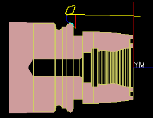

Estimated time to complete: 2–3 minutes
In this activity, you will open the part and replay the program to observe the tool paths and material removal.
An example part containing the completed program is provided for your reference.

Launch the Replay the Turning program activity.